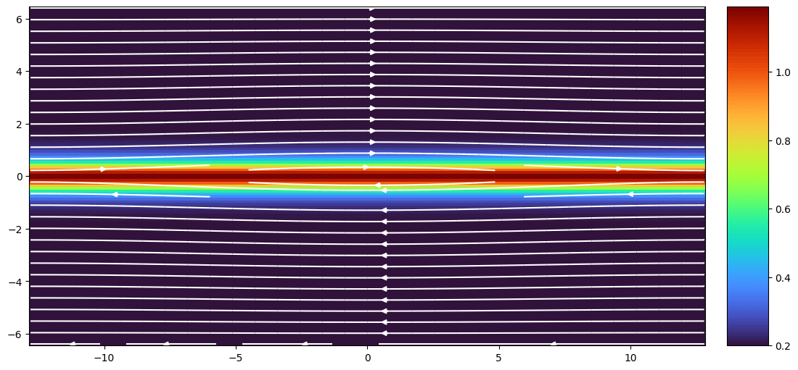

25 Tests
Verifying the validity of models is critical in performing consistent research. This chapter goes through the numerical tests we can do in plasma physics, and is heavily influenced by the tests in the Athena MHD code.
25.0.1 Unit Conversion
Most test parameters are listed in dimensionless units. If SI units are required, we need unit conversions. Typically, we need to start with a reference number density, e.g. \(n_{ref} = 10\,\mathrm{amu/cc}\), and magnetic field, e.g. \(B_{ref} = 10\,\mathrm{nT}\). All the rest conversion factors can be derived from these together with other physical constants.
The reference frequency in rad/s is
\[ \omega_{\mathrm{ref}} = \sqrt{\frac{n_\mathrm{ref}e^2}{\epsilon_0 m}} \]
and then the reference length scale in m, which is equivalent to the inertial length, is
\[ l_\mathrm{ref} = d = \frac{c}{\omega_{\mathrm{ref}}} = \sqrt{\frac{m}{\mu_0 e^2 n_\mathrm{ref}}} \]
The time scale in s is the inverse of reference gyrofrequency,
\[ t_\mathrm{ref} = \frac{1}{\Omega_i} = \frac{m_i}{q_i B_\mathrm{ref}} \]
Actually there is a \(2\pi\) factor missing here, since we need to convert from gyrofrequency to frequency and then take the inverse for the period. However, traditionally no one did that.
The velocity scale in m/s is the Alfvén speed
\[ u_\mathrm{ref} = \frac{l_\mathrm{ref}}{t_\mathrm{ref}} = \frac{B_\mathrm{ref}}{\sqrt{\mu_0 m_i n_\mathrm{ref}}} \]
The pressure scale can be equivalently derived from the magnetic pressure or dynamic pressure
\[ P_\mathrm{ref} = \frac{B_\mathrm{ref}^2}{2\mu_0} = \frac{1}{2}\rho_\mathrm{ref}u_\mathrm{ref}^2 \]
The temperature scale is then
\[ T_\mathrm{ref} = \frac{p_\mathrm{ref}}{n_\mathrm{ref} k_B} = \frac{B_\mathrm{ref}^2}{2\mu_0 k_B n_\mathrm{ref}} \]
In many normalized units, the factor \(1/\sqrt{\mu_0}\) is absorbed into the magnetic field, \[ B^\prime = \frac{B}{\sqrt{\mu_0}} \]
If CGS units is used, then this shall be (???) \[ B^\prime = \frac{B}{\sqrt{4\pi}} \]
Inserting the initially chosen values, we get a full set of conversion factors from variables in normalized units \(n^\prime, B^\prime, u^\prime, p^\prime, T^\prime, \mathcal{E}^\prime\) to SI units \(n, B, u, p, T, \mathcal{E}\):
\[ U_\mathrm{SI} = U^\prime * U_\mathrm{ref} \]
where each conversion factor is summarized in Table 25.1.
| Variable | Conversion factor |
|---|---|
| \(\rho\) | \(n_\mathrm{ref}*m\) |
| \(B\) | \(B_\mathrm{ref}\) |
| \(\rho u\) | \(\frac{B_\mathrm{ref}}{\sqrt{\mu_0 m n_\mathrm{ref}}}\) |
| \(p\) | \(\frac{B_\mathrm{ref}^2}{2\mu_0}\) |
| \(T\) | \(\frac{B_\mathrm{ref}^2}{2\mu_0 k_B n_\mathrm{ref}}\) |
| \(\mathcal{E}\) | \(\frac{B_\mathrm{ref}^2}{2\mu_0}\) |
25.0.1.1 Example: dimensionless to \(n,u,T\)
When dealing with velocity distribution functions, one easy way is to write \(f(\mathbf{v})=f(\mathbf{v}; n,\mathbf{u},T)\). For instance, a 3D Maxwellian is given as
\[ f(\mathbf{v}) = n\left( \frac{m}{2\pi k_B T} \right)^{3/2} \exp\left(-\frac{m(\mathbf{v}-\mathbf{u})^2}{2k_B T}\right) \]
From conservative variables \((\rho,\rho\mathbf{u},\mathcal{E},\mathbf{B})\) to \((n,\mathbf{u},T,\mathbf{B})\), we have
\[ \begin{aligned} n_\mathrm{SI} &= \frac{n_\mathrm{ref}}{m}\rho^\prime \\ u_\mathrm{SI} &= u_\mathrm{ref}\left( \frac{\rho^\prime u^\prime}{\rho^\prime} \right) \\ T_\mathrm{SI} &= \frac{(\gamma-1)B_\mathrm{ref}^2}{2\mu_0 k_B n_\mathrm{ref}}\left[ \frac{\mathcal{E}^\prime - {\rho^\prime}^2 - {B^\prime}^2}{n^\prime} \right] \\ B_\mathrm{SI} &= B_\mathrm{ref}B^\prime \\ \end{aligned} \]
25.1 Errors
- Diffusion error: the rate at which the amplitude of the wave decreases.
- Dispersion error: the difference between the speed at which the wave propagates in the numerical versus the analytic solution.
The error norm usually contains contributions from both. However, one could plot the error as a function of position or phase to track each individually.
25.2 Wave Tests
25.2.1 Linear wave
The density, velocity, magnetic field, and total energy are all set to constant values initially. These values can be chosen so that the wave speeds are all well separated, and so that (in MHD) the wavevector is at an arbitrary angle to \(\mathbf{B}\). The precise values chosen for the tests described here are given in the appropriate results section below.
The wave is added to as a perturbation to these constant values of the form \(\delta \mathbf{U} = A \mathbf{R} \sin(2\pi x)\). Here \(\mathbf{U}\) is the vector of conserved variables, \(A\) is an amplitude, and \(\mathbf{R}\) is the right-eigenvector corresponding to the desired wave family. The components of \(\mathbf{R}\) for each test are listed in the appropriate results section below. For all the tests shown here, \(A = 10^{-6}\).
The length of the computational domain is set to be one wavelength. Periodic boundary conditions are used. After the wave has propagated one wavelength, we measure the error in the numerical solution by computing the norm of the vector resulting from summing the absolute value of errors in each variable over the grid,
\[ \begin{aligned} \epsilon &= || \Delta U || = \sqrt{\sum_k (\Delta U_k)^2} \\ &= \sqrt{\sum_k (\sum_{i=1}^{N_x} |U_{k,i}^n - U_{k,i}^0| / N_x)^2} \end{aligned} \]
Here, \(U_{k,i}\) is the numerical solution for the k-th component of the vector of conserved quantities at grid point \(i\) and time level \(n\), \(U_{k,i}^0\) is the initial numerical solution, and \(N_x\) is the number of grid points. Note the initial solution \(U_{k,i}^0\) is just the analytic solution which has been discretized to the grid. Since the discretization of the initial condition also introduces error, to measure the error in the integration algorithm it is important to compute errors relative to the initial condition \(U_{k,i}^0\) rather than the analytic solution. In 2D (3D), summation over \(j (k)\) is required as well.
To compare to the results given here, it is important to
- Use the same amplitude for the wave
- Compute the errors in exactly the same way
- Compute the errors at exactly the same time
This is an excellent quantitative test of the accuracy and convergence rate of a numerical algorithm. The only drawback is that it involves only linear amplitude oscillations. Thus, this test is not characteristic of the kind of problem codes are written to solve in the first place (after all, the dynamics of linear waves can be treated analytically). A code which does well on this test may still be very poor at shock-capturing. Still, it is nice to know an algorithm reduces to the correct answer in the linear regime. Moreover, since virtually all schemes are first-order for discontinuities such as shocks, smooth problems like this are the only way to measure the actual convergence rate of higher-order schemes.
This test has proved very useful at detecting coding bugs:
- The errors for left- and right-going waves of the same family should be identical.
- If the errors do not converge, something is wrong somewhere.
- It is necessary to use double precision and very small wave amplitudes to eliminate round-off error and nonlinear effects.
25.2.1.1 1D Adiabatic Hydrodynamics
Given Equation 5.12 (with \(\mathbf{B}=0\)), \[ \begin{aligned} \rho &= 1 \\ \mathbf{u} &= \mathbf{0} \\ p &= 1/\gamma \end{aligned} \]
with \(\gamma = 5/3\). The conservative variables are \[ \mathbf{U}=[\rho, \rho u_x, \rho u_y, \rho u_z, E] \]
and the right-eigenvector for a left-going wave is \[ \mathbf{R}=[1.0, -1.0, 1.0, 1.0, 1.5] \]
When switching from \(\mathcal{E}\) to \(p\), we can see from the background and \(\mathbf{R}\) that
\[ \delta p = (\gamma-1)\left( \delta\mathcal{E} - \frac{1}{2}\rho \delta u^2 \right) = 0 \]
The parameters are summarized in Table 25.2.
| Variable | Background | Perturbation \(\mathbf{R}\) |
|---|---|---|
| \(\rho\) | 1 | 1.0 |
| \(\rho u_x\) | 0 | -1.0 |
| \(\rho u_y\) | 0 | 1.0 |
| \(\rho u_z\) | 0 | 1.0 |
| \(p\) | \(\frac{1}{\gamma}\) | 0.0 |
| \(\mathcal{E}\) | \(\frac{1}{\gamma(\gamma-1)}\) | 1.5 |
The absolute error in propagating a sound wave to the left one wavelength as a function of the number of grid points \(N_x\)
25.2.1.2 1D Adiabatic MHD
Given Equation 5.12,
\[ \begin{aligned} \rho &= 1 \\ \mathbf{u} &= \mathbf{0} \\ p &= 1/\gamma \\ \mathbf{B} &= [1, \sqrt{2}, 0.5]*(4\pi)^{1/2} \\ \end{aligned} \]
with \(\gamma = 5/3\). Thus, the fast magnetosonic speed is 2.0, the Alfvén speed is 1.0, and the slow magnetosonic speed is 0.5.
\[ \mathbf{U} = [\rho, \rho u_x, \rho u_y, \rho u_z, E, B_y, B_z] \]
then the right eigenvectors for left going waves are as follows:
- For a fast magnetosonic wave:
U = [
4.472135954999580e-01
-8.944271909999160e-01
4.216370213557840e-01
1.490711984999860e-01
2.012457825664615e+00
8.432740427115680e-01
2.981423969999720e-01 ]- For a Alfvén wave:
U = [
0.0
0.0
-3.333333333333333e-01
9.428090415820634e-01
0.0
-3.333333333333333e-01
9.428090415820634e-01 ]- For a slow magnetosonic wave:
U = [
8.944271909999159e-01
-4.472135954999579e-01
-8.432740427115680e-01
-2.981423969999720e-01
6.708136850795449e-01
-4.216370213557841e-01
-1.490711984999860e-01 ]The parameters are summarized in Table 25.3.
Table 25.3: 1D adiabatic MHD linear wave parameters
| Variable | Background | Perturbation \(\mathbf{R}\) |
|---|---|---|
| \(\rho\) | 1.0 | 4.472135954999580e-1 |
| \(\rho u_x\) | 0 | -8.944271909999160e-1 |
| \(\rho u_y\) | 0 | 4.216370213557840e-1 |
| \(\rho u_z\) | 0 | 1.490711984999860e-1 |
| \(\mathcal{E}\) | \(\frac{1}{\gamma(\gamma-1)}+\frac{13}{8}\) | 2.012457825664615 |
| \(B_x / \sqrt{4\pi}\) | 1.0 | 0.0 |
| \(B_y / \sqrt{4\pi}\) | \(\sqrt{2}\) | 8.432740427115680e-1 |
| \(B_z / \sqrt{4\pi}\) | 0.5 | 2.981423969999720e-1 |
| Variable | Background | Perturbation \(\mathbf{R}\) |
|---|---|---|
| \(\rho\) | 1.0 | 0.0 |
| \(\rho u_x\) | 0 | 0.0 |
| \(\rho u_y\) | 0 | -3.333333333333333e-1 |
| \(\rho u_z\) | 0 | 9.428090415820634e-1 |
| \(\mathcal{E}\) | \(\frac{1}{\gamma(\gamma-1)}\) | 0.0 |
| \(B_x / \sqrt{4\pi}\) | 1.0 | 0.0 |
| \(B_y / \sqrt{4\pi}\) | \(\sqrt{2}\) | -3.333333333333333e-1 |
| \(B_z / \sqrt{4\pi}\) | 0.5 | 9.428090415820634e-1 |
| Variable | Background | Perturbation \(\mathbf{R}\) |
|---|---|---|
| \(\rho\) | 1.0 | 8.944271909999159e-1 |
| \(\rho u_x\) | 0 | -4.472135954999579e-1 |
| \(\rho u_y\) | 0 | -8.432740427115680e-1 |
| \(\rho u_z\) | 0 | -2.981423969999720e-1 |
| \(\mathcal{E}\) | \(\frac{1}{\gamma(\gamma-1)}\) | 6.708136850795449e-1 |
| \(B_x / \sqrt{4\pi}\) | 1.0 | 0.0 |
| \(B_y / \sqrt{4\pi}\) | \(\sqrt{2}\) | -4.216370213557841e-1 |
| \(B_z / \sqrt{4\pi}\) | 0.5 | -1.490711984999860e-1 |
In some cases, we need to convert from conservative variables to other set of variables, e.g. \((n,\mathbf{u},p,\mathbf{B})\). The number density perturbation is \[ \delta n = \frac{\delta \rho}{m} = \frac{\rho_0}{m}\sin 2\pi x \tag{25.1}\] Assuming background \(u_0=0\), \[ \delta u = \frac{1}{\rho}\left[ \delta(\rho u) - (\delta \rho) u \right] = \frac{1}{\rho_0}\delta(\rho u) \tag{25.2}\] Given the perturbation of energy density \[ \begin{aligned} \mathcal{E} &= \frac{p}{\gamma-1} + \frac{\rho u^2}{2} + \frac{B^2}{2\mu_0} \\ \delta\mathcal{E} &= \frac{\delta p}{\gamma-1} + \frac{\rho_0\delta u^2}{2} + \frac{1}{2\mu_0}\left( 2B_0\delta B + \delta B^2 \right) \end{aligned} \]
the pressure perturbation is then
\[ \begin{aligned} \delta p &= (\gamma-1)\left[ \delta\mathcal{E} - \frac{1}{2}\rho\delta u^2 - \frac{1}{2\mu_0}\left( 2B_0\delta B + \delta B^2 \right) \right] \\ &= (\gamma-1)\left[ \delta\mathcal{E} - \frac{1}{2\rho_0}\delta(\rho u)^2 - \frac{1}{2\mu_0}\left( 2B_0\delta B + \delta B^2 \right) \right] \end{aligned} \tag{25.3}\]
If the input is \(T\) instead of \(p\), we have \[ \begin{aligned} \delta T &= \frac{1}{k_B\, n}\left[ \delta p - \delta n\, k_B\, T \right] = \frac{m}{k_B\, \rho}\left[ \delta p - \delta \rho\frac{k_B\, T}{m} \right] \\ &= \frac{m}{k_B\,\rho_0}\delta p - \frac{\delta\rho}{\rho_0}T \end{aligned} \tag{25.4}\]
25.2.1.3 2D Adiabatic MHD
In this case, we use the same values as for the 1D adiabatic MHD test, but we use a 2D grid of size \(0 \le x \le 2\) and \(0 \le y \le 1\). We use twice as many grid points in the x-direction at every resolution (e.g. our highest resolution is \(512 \times 256\)), thus the grid is rectangular, but each cell is square. The wave propagates along the diagonal of the grid, at an angle \(\theta = \tan^{-1}(0.5) \approx 26.6\) degrees with respect to the x-axis. Since the wave does not propagate along the diagonals of the grid cells, we guarantee the x- and y-fluxes are different; that is the problem is truly multi-dimensional.
25.2.2 3D Adiabatic MHD
Now we use a 3D grid of size \(0 \le x \le 3\) and \(0 \le y \le 1.5\), and \(0 \le z \le 1.5\). The grid is of size \(2N\times N \times N\). The wave propogates along the grid diagonal, again guaranteeing a truly multidimensional test. The background state is identical to the 1D test values.
25.2.3 Circularly polarized Alfvén wave
\[ \begin{aligned} \rho &= 1.0 \\ p &= 0.1 \\ v_\perp &= 0.1\sin(2\pi x_\parallel) \\ v_z &= 0.1\cos(2\pi x_\parallel) \\ B_\perp &= 0.1\sin(2\pi x_\parallel) \\ B_z &= 0.1\cos(2\pi x_\parallel) \end{aligned} \]
with \(\gamma = 5/3\) and \(x\parallel = (x \cos\alpha + y\sin\alpha)\) where \(\alpha\) is the angle at which the wave propagates with respect to the grid. Here \(v_\perp\) and \(B_\perp\) are the components of velocity and magnetic field perpendicular to the wavevector. They are related to the components stored on the grid \(B_x\) and \(B_y\) via
\[ \begin{aligned} B_\perp = B_y\cos\alpha - B_x\sin\alpha \\ B_\parallel = B_x\cos\alpha + B_y\sin\alpha \end{aligned} \]
For 2D the computational domain is of size \(L_x = 2L_y\), with \(N_x = 2N_y\). Thus, the grid is rectangular, but each cell is square. The wave propagates along the diagonal of the grid, at an angle \(\theta = \tan^{-1}(0.5) \approx 26.6\) degrees with respect to the x-axis. Since the wave does not propagate along the diagonals of the grid cells, we guarantee the x- and y-fluxes are different; that is the problem is truly multi-dimensional.
The wave is an exact nonlinear solution to the MHD equations, allowing one to test the algorithm in the nonlinear regime. Although nonlinear amplitude Alfvén waves are subject to a parametric instability which causes them to decay into magnetosonic waves, the instability should not be present for the parameters defined here. Since the problem is smooth, it can be used for convergence testing. Running the test with smaller pressure (higher β) and/or larger amplitudes is a good test of how robust is the algorithm.
25.2.4 Light wave
25.2.5 Firehose instability
25.2.6 Mirror mode instability
25.3 Shock Tests
25.3.1 Brio-Wu shock tube
This test is an MHD shocktube, where the right and left states are initalized to different values. The initial left/right values are
\[ \begin{aligned} \rho &= 1.0,\, 0.125 \\ u_x &= 0.0,\, 0.0 \\ u_y &= 0.0,\, 0.0 \\ u_z &= 1.0,\, -1.0 \\ B_x &= 0.75,\, 0.75 \\ B_y &= 0.0,\, 0.0 \\ B_z &= 0.0,\, 0.0 \\ p &= 1.0,\, 0.1 \end{aligned} \]
and \(\gamma = 2\). The hydrodynamic portion of the initial conditions are the same as for the Sod shock tube problem.
This is a standard test for MHD codes for checking whether the code can accurately represent the shocks, rarefactions, contact discontinuities, and the compound structures of MHD.
25.3.2 Ryu and Jones Test 2A
This test is an MHD shocktube, where the right and left states are initialized to different values. It involves a three-dimensional field and velocity structure and rotation of the plane of the magnetic field. The initial left/right values are
\[ \begin{aligned} \rho &= 1.08,\, 1.0 \\ u_x &= 1.2,\, 0.0 \\ u_y &= 0.01,\, 0.0 \\ u_z &= 0.5,\, 0.0 \\ B_x &= 3.6/\sqrt{4\pi},\, 2.0/\sqrt{4\pi} \\ B_y &= 2.0/\sqrt{4\pi},\, 4.0/\sqrt{4\pi} \\ B_z &= 2.0/\sqrt{4\pi},\, 2.0/\sqrt{4\pi} \\ p &= 0.95,\, 1.0 \end{aligned} \]
This test contains fast shocks, slow shocks, and rotational discontinuities which propagate to each side of the contact discontinuity. The ability of the scheme to capture all 7 waves in MHD can be checked with this single test.
25.3.3 Spherical blast waves
We used a rectangular domain, \(-0.5 \le x \le 0.5; -0.75 \le y \le 0.75\). The boundary conditions are periodic everywhere. This non-square domain and periodic boundary conditions produces complex shock-shock and shock-CD interactions at late times.
The initial conditions are
\[ \begin{aligned} \rho &= 1.0 \\ \mathbf{u} &= [0.0, 0.0, 0.0] \\ p &= 0.1 \end{aligned} \]
with \(\gamma = 5/3\). Initial velocities are zero everywhere. Within the region \(r < 0.1\), \(p = 10.0\) (that is, 100 times the ambient pressure). For the MHD problem, the initial magnetic field is uniform everywhere with \(B_x / \sqrt{4\pi} = B_y / \sqrt{4\pi} = 1/\sqrt{2}\).
Although this test is not very quantitative, it makes great movies!
At early times, it is important that the out-going blast wave is spherical and shows no grid alignment effects. At late times, the interaction of the blast wave with the CD at the edge of the evacuated bubble in the center produces filaments of dense gas by the Richtmyer-Meshkov instability. It is important these fingers are sharp and not diffused away. Moreover, for the hydrodynamical problem, the pattern of the fingers should be exactly symmetric top-to-bottom and left-to-right. For the MHD problem, the Richtmyer-Meshkov instability is suppressed, and no fingers are evident.
25.4 Instability Tests
25.4.1 Kelvin-Helmholtz instability
We use a square domain, \(-0.5 \le x \le 0.5; -0.5 \le y \le 0.5\). The boundary conditions are periodic everywhere. For \(|y| > 0.25\), we set \(\rho = 1\) and \(u_x = -0.5\), for \(|y| \le 0.25\), \(\rho = 2\) and \(u_x = 0.5\). The pressure is 2.5 everywhere, and \(\gamma = 1\).4, giving a Mach number of about 0.377 in the \(\rho=2\) gas, and about 0.267 in the \(\rho = 1\) gas. The interface between the two oppositely directed streams is a discontinuity, that is a “slip surface”. We use different densities in the two fluids to make visualization of the interface easier.
For the MHD problem, the initial magnetic field is uniform everywhere with \(B_x / \sqrt{4\pi} = 0.5\).
To seed the instability, we add random numbers to both the x- and y-components of the velocity with peak-to-peak amplitude of 0.01.
At early times, one can check that the growth rate of the transverse component of the velocity agrees with the prediction from linear theory. This requires initializing a single-mode perturbation rather than a spectrum of perturbations as we have done here.
At late times, once the instability has gone fully nonlinear, it is difficult to make quantitative comparisons. However, the sharpness of the boundary between the two streams is an indication of the numerical diffusion of the scheme. For example, if the HLLE Riemann solver is used, diffusion at the interface is significant enough to suppress the instability.
25.4.2 Rayleigh-Taylor instability
For the single-mode test, we use a rectangular domain, \(-0.25 \le x \le 0.25; -0.75 \le y \le 0.75\). The boundary conditions are periodic at \(|x| = 0.25\), and reflecting walls at \(|y| = 0.75\). For \(y>0\) the density is 2.0, while for \(y \le 0\) it is 1.0. A constant gravitational acceleration \(g = 0.1\) must be added to the equations of motion. The pressure is given by the condition of hydrostatic equilibrium, that is \(p = p_0 - 0.1\rho y\), where \(p_0=2.5\), and \(\gamma=1.4\). This gives a sound speed of 3.5 in the low density medium at the interface.
The structures which appear in the nonlinear regime are very sensitive to the nature of the perturbations used to seed the instability. To avoid gridding errors associated with perturbing the interface, we instead perturb the velocities. For the single-mode perturbation, we set \(u_y = 0.01[1 + \cos(4\pi x)][1 + \cos(3\pi y)]/4\).
For the multimode perturbation, we use a domain of size \(-0.25 \le x \le 0.25; -0.375 \le y \le 0.375\), and set \(u_y = A[1 + \cos(8\pi y/3)]/2\), where \(A\) is a random number at each zone with a peak-to-peak amplitude of 0.01.
The way in which source terms are included in the algorithm can have a strong effect on the outcome of this test. For example, for Godunov schemes, if the source term is added using operator splitting, grid noise generated by the lack of an exact numerical equilibrium can perturb the interface and seed structure. If the source terms are included directly in the reconstruction and integration steps, it is able to hold hydrostatic equilibrium automatically.
At early times, one can check that the growth rate of the vertical component of the velocity agrees with the prediction from linear theory.
At late times, once the instability has gone fully nonlinear, it is difficult to make quantitative comparisons. However, the sharpness of the boundary between the two fluids is an indication of the numerical diffusion of the scheme. Also, the amount of fine scale struture induced by secondary KH instabilities is sensitive to the way the interface is perturbed, and how sharp the algorithm preserves the contact discontinuity. It is not always clear that sharper is better, however. For example the “contact steepener” in the PPM algorithm can introduce “stair stepping” in contact discontinuities in multidimensions, which in turn can cause KH rolls to be seeded by grid noise.
25.5 Turbulence Tests
25.5.1 Orszag-Tang vortex
We use a square domain, \(0 \le x \le 1; 0 \le y \le 1\). The boundary conditions are periodic everywhere. The density \(\rho\) is \(25/(36\pi)\) and the pressure is \(5/(12\pi)\) everywhere, and \(\gamma = 5/3\). Note that this choice gives \(u_s^2 = \gamma p/\rho = 1\). The initial velocities are periodic with \(u_x = -\sin(2\pi y)\) and \(u_y = \sin(2\pi x)\). The magnetic field is initialized using a periodic vector potential defined at zone corners; \(A_z = B_0 (\cos(4\pi x)/(4\pi) + \cos(2\pi y)/(2\pi))\), with \(B_0 = 1/\sqrt(4\pi)\). Face-centered magnetic fields are computed using \(\mathbf{B} = \nabla\times \mathbf{A}\) to guarantee \(\nabla\cdot\mathbf{B}=0\) initially. This gives \(B_x = -B_0 \sin(2\pi y)\) and \(B_y = B_0 \sin(4\pi x)\).
The Orszag-Tang vertex is a well-known model problem for testing the transition to supersonic 2D MHD turbulence. Thus, the problem tests how robust the code is at handling the formation of MHD shocks, and shock-shock interactions. The problem can also provide some quanititative estimates of how significant magnetic monopoles affect the numerical solutions, testing the \(\nabla\cdot\mathbf{B}=0\) condition. Finally, the problem is a very common test of numerical MHD codes in two dimensions, and has been used in many previous studies. As such, it provides a basis for consistent comparison of codes.
25.6 Reconnection Tests
25.6.1 GEM challenge
This 2D setup is based on (Birn et al. 2001). The computation is carried out in a rectangular domain \(-L_x/2 \le x\le L_x/2\) and \(-L_z/2\le z \le L_z/2\). The system is taken to be periodic in the x direction with ideal conducting boundaries at \(z=\pm L_z/2\). Thus the boundary conditions on the magnetic fields at the z boundaries are \(B_z=\partial B_x/\partial z = \partial B_y/\partial z = 0\) with corresponding conditions on the electric fields and particle or fluid quantities. Open boundary conditions are used for all quantities.
The equilibrium chosen for the reconnection challenge problem is a Harris equilibrium with a floor in the density outside of the current layer. The magnetic field is given by
\[ B_x(z) = B_0 \tanh(z/\lambda) \]
where \(\lambda\) is the current sheet scale size, and the density by
\[ n(z) = n_0 \text{sech}^2(z/\lambda) + n_\infty \]
The electron and ion temperatures, \(T_e\) and \(T_i\), are taken to be uniform in the initial state. We assume the plasma \(\beta = (p_i+p_e)/p_B=1\) initially.
The normalization of the space and time scales of the system is chosen to be the ion inertial length \(d_i=c/\omega_{pi}\) and the ion cyclotron frequency \(\Omega_i^{-1}\), where \(\omega_{pi}^2 = n_0e^2/\epsilon_0 m_i\) is evaluated with the density \(n_0\) and the ion gyrofrequency \(\Omega_i = eB_0/m_i\) is evaluated at the peak magnetic field. The velocities are then normalized to the Alfvén speed \(v_A\). In the normalized units, \(B_0 = 1\) and \(n_0 = 1\). Specific parameters for the simulations are \(L_x = 25.6, L_z = 12.8, \lambda=0.5, n_\infty/n_0 = 0.2\), and \(T_e/T_i = 0.2\). \(m_i/m_e = 25\) is assumed if required.
The initial magnetic island is specified through the perturbation in the magnetic flux,
\[ \psi(x,z) = \psi_0 \cos(2\pi x/L_x)\cos(\pi z/L_z) \]
where the magnetic perturbation is given by \(\mathbf{B} = \hat{y}\times\nabla\psi\), or more specifically,
\[ \begin{aligned} B_{1x} &= -\psi_0\Big(\frac{\pi}{L_z}\Big)\cos(2\pi x/L_x)\sin(\pi z/L_z) \\ B_{1z} &= \psi_0\Big(\frac{2\pi}{L_x}\Big)\sin(2\pi x/L_x)\cos(\pi z/L_z) \end{aligned} \]
In normalized units \(\psi_0 = 0.1\), which produces an initial island width which is comparable to the initial width of the current layer. The rationale for such a large initial perturbation is to put the system in the nonlinear regime of magnetic reconnection from the beginning of the simulation.
The initial setup is shown in Figure 25.1.

25.6.1.1 Why do we need to resolve ion inertial length
Physically, electrons and ions separate at the scale of ion inertial length. Numerically, Hall term is important only when cell size is small enough to resolve the ion initial length. The reason is as follows. The Ohm’s law is
\[ \mathbf{E} = -(\mathbf{U}+\mathbf{U}_H)\times\mathbf{H} \]
Assume the typical flow velocity is Alfvén velocity: \(\mathbf{U} = \mathbf{V}_A\). The Hall velocity is estimated as:
\[ \mathbf{U}_H = -\frac{\mathbf{J}}{ne} = -\frac{\nabla\times\mathbf{B}}{\mu_0ne} \sim -\frac{|dB|}{\mu_0ne\Delta x} \sim -\frac{|B|}{\mu_0ne\Delta x} \]
The approximation \(dB\approx B\) is valid for relatively coarse grid size; for fine discrete cell sizes, this approximation does not hold, so magnetic field cannot cancel out in the following estimation. Let us now assume we can make this assumption. Then the ratio of Hall velocity and Alfvén velocity is:
\[ \frac{|\mathbf{U}_H|}{|\mathbf{V}_A|} = \frac{c/\omega_{pi}}{\mu_0 \Delta x} \]
Ion inertial length is also important for PIC: if particle’s velocity is assumed to be Alfvén velocity, then ion inertial length is the same as ion gyroradius.
25.6.2 Current sheet
The grid is a square with \(-0.5 \le x \le 0.5\) and \(-0.5 \le y \le 0.5\). The density and pressure are uniform everywhere, with \(\rho = 1\) and \(p = \beta/2\) where \(\beta\) is an input parameter. For \(|x| > 0.25\) we set \(B_y / \sqrt{4π} = 1\), otherwise \(B_y / \sqrt{4π} = -1\). The velocities are \(u_x = A \sin(2\pi y)\) (where \(A\) is an amplitude) and \(u_y = 0\). The “standard” test uses \(\beta = 0.1\) and \(A = 0.1\), although part of the point of this test is to see how small (large) a value of \(\beta (A)\) is required to break the code.
Although we do not know the analytic solution for this problem, it may be an excellent test of the robustness of the algorithm. For ideal MHD, initially the solution should be nonlinearly (???) polarized Alfvén waves propagating along the field in the y-direction (which quickly generate magnetosonic waves since the magnetic pressure does not remain constant). However, because of the two current sheets in the problem (at \(x = \pm0.25\)), reconnection inevitably occurs. Because \(\beta < 1\), this reconnection drives strong over-pressurized regions that launch magnetosonic waves transverse to the field. Moreover, as reconnection changes the topology of the field lines, magnetic islands will form, grow, and merge. The point of the test is to make sure the algorithm can follow this evolution for as long as possible without crashing. Keeping \(\nabla\cdot\mathbf{B}=0\) as the field toplogy undergoes complex changes could be important.